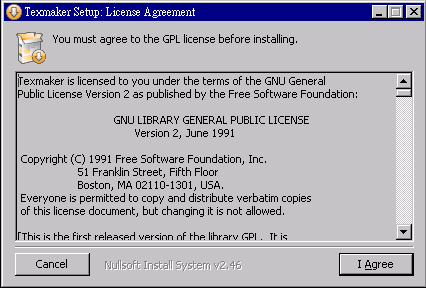

前言
編輯小語
在本期的「程式人雜誌」中，聚焦的主題是「圖形搜尋」，包含深度優先 DFS、廣度優先 BFS 與最佳優先搜尋等等！
另外、Arduino 系列雖然告一段落，但是 Cooper Maa 探索 Arduino 背後 AVR 晶片的文章「從 Arduino 到 AVR 晶片(1) -- AVR 晶片與 IO ports 範例」則讓我們能夠初步理解 Arduino 的設計原理，以及和 AVR 晶片之間的關係。
接著、鄧淵元先生的「符式協會論文文件編輯入門教學(1) – 作業環境準備」，介紹了如何採用和「程式人雜誌」編撰相同的手法，編寫電子書與論文的方法。這篇文章補足了之前我們沒介紹的很多部份，並且加了不少新的內容，很適合想學習電子書編撰的朋友們閱讀。
另外、我們還有 0xde 的 「Visual Basic 6.0:實作簡易小算盤」與 Bridan 的「從 RS-232 偷電的方法」等文章，希望讀者們會喜歡。
---- （程式人雜誌編輯 - 陳鍾誠）
授權聲明
本雜誌許多資料修改自維基百科，採用 創作共用：姓名標示、相同方式分享 授權，若您想要修改本書產生衍生著作時，至少應該遵守下列授權條件：
- 標示原作者姓名 (包含該文章作者，若有來自維基百科的部份也請一併標示)。
- 採用 創作共用：姓名標示、相同方式分享 的方式公開衍生著作。
另外、當本雜誌中有文章或素材並非採用 姓名標示、相同方式分享 時，將會在該文章或素材後面標示其授權，此時該文章將以該標示的方式授權釋出，請修改者注意這些授權標示，以避免產生侵權糾紛。
例如有些文章可能不希望被作為「商業性使用」，此時就可能會採用創作共用：姓名標示、非商業性、相同方式分享 的授權，此時您就不應當將該文章用於商業用途上。
最後、懇請勿移除公益捐贈的相關描述，以便讓愛心得以持續散播！
本期焦點
圖形搜尋簡介
簡介
在離散數學、演算法與人工智慧的領域，很多問題可以表示為「節點與連線所形成的圖形」，一個程式要解決某問題其實是在這個圖形裏把目標節點給找出來，於是問題求解就簡化成了圖形的搜尋，我們只要把解答給「找出來」就行了。
圖形搜尋的方法大致可以分為「深度優先搜尋 (Depth-First Search, DFS)、廣度優先搜尋 (Breath-First Search, BFS)、最佳優先搜尋 (Best-First Search, BestFS) 等三類。
然後針對最佳優先搜尋的部份，還有一種具有理論背景，且較為強大好用的 A* 搜尋法可採用。
圖形的表達
圖形是由節點 (node) 與連線 (edge) 所組成的。舉例而言，以下是一個包含六個節點與十條連線的簡單圖形。

圖、圖形 Graph 的範例
深度優先搜尋
所謂的「深度優先搜尋」 (Depth-First Search, DFS)，就是一直往尚未訪問過的第一個鄰居節點走去的一種方法，這種方法可以採用程式設計中的「遞迴技巧」完成，以下是深度搜尋的演算法：
Algorithm DFS(graph, node) { // 深度優先搜尋，graph : 圖形, node:節點
if (node.visited) return; // 如果已訪問過，就不再訪問
node.visited = 1; // 並設定為已訪問
foreach (neighbor of node) // 對於每個鄰居
DFS(graph, neighbor); // 逐一進行深度優先搜尋的訪問。
end您可以看到上述的演算法中，我們單純採用遞迴的方式，就可以輕易的完成整個 DFS 演算法。
當然、實作為程式的時候，會稍微複雜一點，以下是使用 Javascript 的實作方式：
function dfs(g, node) { // 深度優先搜尋
if (g[node].v !=0) return; // 如果已訪問過，就不再訪問
printf("%d=>", node); // 否則、印出節點
g[node].v = 1; // 並設定為已訪問
var neighbors = g[node].n; // 取出鄰居節點
for (var i in neighbors) { // 對於每個鄰居
dfs(g, neighbors[i]); // 逐一進行訪問
}
}針對上述的範例圖形，若採用深度優先搜尋，其結果可能如下所示 (圖中紅色的數字代表訪問順序)

圖、深度優先搜尋的順序
廣度優先搜尋
雖然深度優先搜尋可以搜尋整個圖形，但是卻很可能繞了很久才找到目標，於是從起點到目標可能會花費很久的時間 (或說路徑長度過長)。
如果我們想找出到達目標最少的步驟，那麼就可以採用「廣度優先搜尋」 (Breath-First Search, BFS) 的方式。
廣度優先搜尋 BFS 是從一個節點開始，將每個鄰居節點都一層一層的拜訪下去，深度最淺的節點會優先被拜訪的方式。
舉例而言，針對上述的圖形範例，若採用「廣度優先搜尋 BFS 」的方式，那麼拜訪順序將會如下所示：

圖、廣度優先搜尋的順序
要能用程式進行廣度優先搜尋，必須採用「先進先出」(First-in First-Out, FIFO) 的方式管理節點，因此通常在「廣度優先搜尋」裏會有個佇列 (queue) 結構，以下是 BFS 的演算法：
Algorithm BFS(graph, queue)
if queue.empty() return;
node = queue.dequeue();
if (!node.visited)
node.visited = true
else
return;
foreach (neighbor of node)
if (!neighbor.visited)
queue.push(neighbor)
end以下是使用 Javascript 的 BFS 程式實作片段：
function bfs(g, q) { // 廣度優先搜尋
if (q.length == 0) return; // 如果 queue 已空，則返回。
var node = dequeue(q); // 否則、取出 queue 的第一個節點。
if (g[node].v == 0) // 如果該節點尚未拜訪過。
g[node].v = 1; // 標示為已拜訪
else // 否則 (已訪問過)
return; // 不繼續搜尋，直接返回。
printf("%d=>", node); // 印出節點
var neighbors = g[node].n; // 取出鄰居。
for (var i in neighbors) { // 對於每個鄰居
var n = neighbors[i];
if (!g[n].visited) // 假如該鄰居還沒被拜訪過
q.push(n); // 就放入 queue 中
}
bfs(g, q);
}最佳優先搜尋
但是、上述兩個方法其實都還不夠好，深度搜尋會猛衝亂衝，而廣度搜尋則會耗費太多的記憶體，並且沒有效率，無法很快的找到目標點。
假如我們能夠知道哪些點距離目標點最近，也就是哪些點比較好的話，那就能採用「最佳優先搜尋 (Best-First Search) 的方式來搜尋了。
最佳優先搜尋的實作方法與廣度優先搜尋類似，但是並不採用佇列 (queue) ，而是採用一種根據優先程度排序的結構，每次都取出最好的那個繼續進行搜尋。
但是、節點的好壞通常很難評估，單純採用某種距離去評估往往會過度簡化問題，這點往往是最佳優先搜尋的困難之所在。
還好、有時我們不需要非常精確的評估，只要問題符合  這樣的單調 (monotone) 特性，就可以使用
這樣的單調 (monotone) 特性，就可以使用 A* 演算法來進行較快速的搜尋，這種方法比廣度優先搜尋通常快很多，因為 A* 不會搜尋所有節點，而是有系統的朝著整體較好的方向前進，這種方法在電腦遊戲 (Game) 上常被用在 NPC (非人類角色) 的智慧型搜尋行為設計上面，是人工智慧搜尋方法中較強大的一種。
參考文獻
【本文由陳鍾誠取材並修改自 維基百科，採用創作共用的 姓名標示、相同方式分享 授權】
深度與廣度搜尋法實作 - 使用 JavaScript+Node.js 實作
簡介
為了進一步理解深度優先搜尋 (Depth-First Search) 與廣度優先搜尋 (Breath-First Search) ，我們將在本文中採用 JavaScript 實作這兩個圖形搜尋算法，並且在 node.js 平台上進行測試。
在以下程式中，變數 g 代表下列圖形，而程式中的 dfs() 函數代表深度優先搜尋算法，bfs() 函數代表廣度優先搜尋算法。
圖、圖形 Graph 的範例
程式實作
檔案：graphSearch.js
var util = require("util");
var printf = function() {
return process.stdout.write(util.format.apply(null, arguments));
}
function enqueue(a, o) { a.push(o); }
function dequeue(a) { return a.shift(); }
var g = { // graph: 被搜尋的網路
1: {n:[2,5], v:0}, // n: neighbor (鄰居), v: visited (是否被訪問過)
2: {n:[3,4], v:0},
3: {n:[4,5,6], v:0},
4: {n:[5,6], v:0},
5: {n:[6], v:0},
6: {n:[], v:0}
};
function init(g) { // 初始化、設定 visited 為 0
for (i in g) g[i].v = 0;
}
function dfs(g, node) { // 深度優先搜尋
if (g[node].v !=0) return; // 如果已訪問過，就不再訪問
printf("%d=>", node); // 否則、印出節點
g[node].v = 1; // 並設定為已訪問
var neighbors = g[node].n; // 取出鄰居節點
for (var i in neighbors) { // 對於每個鄰居
dfs(g, neighbors[i]); // 逐一進行訪問
}
}
var queue=[1]; // BFS 用的 queue, 起始點為 1。
function bfs(g, q) { // 廣度優先搜尋
if (q.length == 0) return; // 如果 queue 已空，則返回。
var node = dequeue(q); // 否則、取出 queue 的第一個節點。
if (g[node].v == 0) // 如果該節點尚未拜訪過。
g[node].v = 1; // 標示為已拜訪
else // 否則 (已訪問過)
return; // 不繼續搜尋，直接返回。
printf("%d=>", node); // 印出節點
var neighbors = g[node].n; // 取出鄰居。
for (var i in neighbors) { // 對於每個鄰居
var n = neighbors[i];
if (!g[n].visited) // 假如該鄰居還沒被拜訪過
q.push(n); // 就放入 queue 中
}
bfs(g, q);
}
printf("dfs:"); init(g); dfs(g, 1); printf("\n"); // 呼叫深度優先搜尋。
printf("bfs:"); init(g); bfs(g, queue); printf("\n"); // 呼叫廣度優先搜尋。執行結果
D:\Dropbox\Public\web\ai\code\search>node graphSearch.js
dfs:1=>2=>3=>4=>5=>6=>
bfs:1=>2=>5=>3=>4=>6=>結語
從以上範例您可以看到 BFS 與 DFS 之差異，不過我們沒有為節點加入好壞的評估函數，因此沒有實作最佳優先搜尋，或許讀者可以自行嘗試修改看看。
【本文由陳鍾誠取材並修改自 維基百科，採用創作共用的 姓名標示、相同方式分享 授權】
以深度優先搜尋解決老鼠走迷宮問題 - 使用 JavaScript+Node.js 實作
前言
雖然深度優先搜尋 (DFS) 與廣度優先搜尋 (BFS) 等演算法通常是用在「圖形」這種結構上的，不過「圖形」的結構倒是不一定要真實且完整的表達出來，在很多人工智慧的問題上，我們不會看到完整的「圖形結構」，只會看到某個節點有哪些鄰居節點，然後就可以用 BFS 與 DFS 進行搜尋了。
老鼠走迷宮問題，就是一個可以採用圖形搜尋來解決的經典問題，其中每個節點的鄰居，就是上下左右四個方向，只要沒有被牆給擋住，就可以走到鄰居節點去，因此我們可以採用圖形搜尋的方法來解決迷宮問題，以下是我們的程式實作。
程式實作：老鼠走迷宮
檔案：pathFinder.js
var log = console.log;
function matrixPrint(m) {
for(var i=0;i<m.length;i++)
log(m[i]);
}
function strset(s, i, c) {
return s.substr(0, i) + c + s.substr(i+1);
}
function findPath(m, x, y) {
log("=========================");
log("x="+x+" y="+y);
matrixPrint(m);
if (x>=6||y>=8) return false;
if (m[x][y] == '*') return false;
if (m[x][y] == '+') return false;
if (m[x][y] == ' ') m[x] = strset(m[x], y, '.');
if (m[x][y] == '.' && (x == 5 || y==7))
return true;
if (y<7&&m[x][y+1]==' ') //向右
if (findPath(m, x,y+1)) return true;
if(x<5&&m[x+1][y]==' ') //向下
if (findPath(m, x+1,y)) return true;
if(y>0&&m[x][y-1]==' ') //向左
if (findPath(m, x,y-1)) return true;
if(x>0&&m[x-1][y]==' ') //向上
if (findPath(m, x-1,y)) return true;
m[x][y]='+';
return false;
}
var m =["********",
"** * ***",
" ***",
"* ******",
"* **",
"***** **"];
findPath(m, 2, 0);
log("=========================");
matrixPrint(m);執行結果
D:\Dropbox\Public\web\ai\code\search>node pathFinder.js
=========================
x=2 y=0
********
** * ***
***
* ******
* **
***** **
=========================
x=2 y=1
********
** * ***
. ***
* ******
* **
***** **
=========================
x=2 y=2
********
** * ***
.. ***
* ******
* **
***** **
=========================
x=2 y=3
********
** * ***
... ***
* ******
* **
***** **
=========================
x=2 y=4
********
** * ***
.... ***
* ******
* **
***** **
=========================
x=1 y=4
********
** * ***
.....***
* ******
* **
***** **
=========================
x=1 y=2
********
** *.***
.....***
* ******
* **
***** **
=========================
x=3 y=1
********
**.*.***
.....***
* ******
* **
***** **
=========================
x=4 y=1
********
**.*.***
.....***
*.******
* **
***** **
=========================
x=4 y=2
********
**.*.***
.....***
*.******
*. **
***** **
=========================
x=4 y=3
********
**.*.***
.....***
*.******
*.. **
***** **
=========================
x=4 y=4
********
**.*.***
.....***
*.******
*... **
***** **
=========================
x=4 y=5
********
**.*.***
.....***
*.******
*.... **
***** **
=========================
x=5 y=5
********
**.*.***
.....***
*.******
*.....**
***** **
=========================
********
**.*.***
.....***
*.******
*.....**
*****.**結語
在上面的輸出結果中，* 代表該位置是牆壁，而空格則代表是可以走的路，老鼠走過的地方會放下一個 . 符號，於是您可以看到在上述程式的輸出中，老鼠最後走出了迷宮，完成了任務。
【本文由陳鍾誠取材並修改自 維基百科，採用創作共用的 姓名標示、相同方式分享 授權】
以廣度優先搜尋解決拼圖問題 - 使用 JavaScript+Node.js 實作
前言
以下的「拼圖問題」是將一個已經移動打亂過的拼盤，想辦法移動回原本樣子的問題。
圖、本文程式中的拼圖問題
在以下程式中，我們用一個 3*3 的陣列來代表拼盤，並且用數字 0 來代表其中的空格，因此將方塊 2 移動到空格，其實是用將 0 與 2 兩個數字位置交換所達成的。
透過這樣的資料結構，我們就可以用「廣度優先搜尋」(BFS) 來解決拼圖問題了，以下是我們用 JavaScript 實作，並用 node.js 進行測試的結果。
程式實作：拼圖問題
檔案：puzzleSearch.js
var util = require("util");
var log = console.log;
var up = 1, right=2, down=3, left=4;
function enqueue(a, o) { a.push(o); }
function dequeue(a) { return a.shift(); }
function equal(a, b) { return JSON.stringify(a)===JSON.stringify(b); }
function board2str(b) { return b.join("\n"); }
function findXY(board, value) {
for (var x=0; x<board.length; x++)
for (var y=0; y<board[x].length; y++)
if (board[x][y] === value)
return {x:x,y:y};
return null;
}
function boardClone(b) {
var nb = [];
for (var x in b)
nb[x] = b[x].slice(0);
return nb;
}
function swap(b,x1,y1,x2,y2) {
x2 = Math.round(x2), y2=Math.round(y2);
if (x2<0 || x2 > 2 || y2<0 || y2>2)
return false;
var t = b[x1][y1];
b[x1][y1]=b[x2][y2];
b[x2][y2]=t;
return true;
}
function move(board, dir) {
var xy = findXY(board, 0);
var x = xy.x, y=xy.y;
var nboard = boardClone(board);
var s = false;
switch (dir) {
case up: s=swap(nboard,x,y,x-1,y); break;
case right: s=swap(nboard,x,y,x,y+1); break;
case down: s=swap(nboard,x,y,x+1,y); break;
case left: s=swap(nboard,x,y,x,y-1); break;
}
if (s)
return nboard;
else
return null;
}
function moveAdd(board, dir, neighbors) {
var nboard = move(board, dir);
if (nboard !== null) {
neighbors.push(nboard);
}
}
function getNeighbors(board) {
var neighbors = [];
moveAdd(board, up, neighbors);
moveAdd(board, down, neighbors);
moveAdd(board, right, neighbors);
moveAdd(board, left, neighbors);
return neighbors;
}
var goal = [[1,2,3],
[8,0,4],
[7,6,5]];
var start= [[1,3,4],
[8,2,5],
[7,0,6]];
var queue=[start]; // BFS 用的 queue, 起始點為 1。
var visited={};
var parent={};
var level={};
function bfs(q, goal) { // 廣度優先搜尋
while (q.length > 0) {
var node = dequeue(q); // 否則、取出 queue 的第一個節點。
var nodestr = board2str(node);
// log("q.length=%d level=%d\n===node===\n%s==parent==\n%s", q.length, level[nodestr], nodestr, parent[nodestr]); // 印出節點
if (equal(node, goal)) return true;
if (visited[nodestr]===undefined) // 如果該節點尚未拜訪過。
visited[nodestr] = true; // 標示為已拜訪
else // 否則 (已訪問過)
continue; // 不繼續搜尋，直接返回。
var neighbors = getNeighbors(node); // 取出鄰居。
for (var i in neighbors) { // 對於每個鄰居
var n = neighbors[i];
var nstr = board2str(n);
if (!visited[nstr]) { // 假如該鄰居還沒被拜訪過
parent[nstr] = nodestr;
level[nstr] = level[nodestr] + 1;
enqueue(q, n); // 就放入 queue 中
}
}
}
return false;
}
function backtrace(goal) {
log("======= backtrace =========");
var nodestr = board2str(goal);
while (nodestr !== undefined) {
log("%s\n", nodestr);
nodestr = parent[nodestr];
}
}
level[board2str(start)]=0;
var found = bfs(queue, goal); // 呼叫廣度優先搜尋。
log("bfs:found=%s", found);
if (found)
backtrace(goal);執行結果
D:\Dropbox\Public\web\ai\code\search>node puzzleSearch.js
bfs:found=true
======= backtrace =========
1,2,3
8,0,4
7,6,5
1,0,3
8,2,4
7,6,5
1,3,0
8,2,4
7,6,5
1,3,4
8,2,0
7,6,5
1,3,4
8,2,5
7,6,0
1,3,4
8,2,5
7,0,6結語
在上述執行結果中，我們是將盤面拼完後，才逆向追蹤印出移動過程，因此整個移動方法應該從最下面的盤面看起。換句話說，真正的順序如下：
1,3,4 1,3,4 1,3,4 1,3,0 1,0,3 1,2,3
8,2,5 => 8,2,5 => 8,2,0 => 8,2,4 => 8,2,4 => 8,0,4
7,0,6 7,6,0 7,6,5 7,6,5 7,6,5 7,6,5從上面過程中，您可以看出我們的程式將打亂的盤面給拼回來了。
【本文由陳鍾誠取材並修改自 維基百科，採用創作共用的 姓名標示、相同方式分享 授權】
程式人文集
從 Arduino 到 AVR 晶片(1) -- AVR 晶片與 IO ports 範例 (作者：Cooper Maa)
前言
單晶片微電腦 (Single Chip Microcomputer)，或稱微控制器 (Microcontroller，縮寫為 µC 或 MCU)，是一個將 CPU、記憶體、I/O Port 等周邊電路全部整合為一體的晶片。不像微處理器需要外部電路連接周邊，微控制器的應用只要少許的電路就可以運作，因為所有必要的周邊它都內建了。微控制器主要用在嵌入式系統，例如汽車電子、工業控制、機械控制等領域。
著名的 Arduino 板子上也有一顆微控制器，它是 AVR 的晶片，例如 Arduino UNO, Duemilanove 用的是 ATmega328，Arduino Diecimila 的是 ATmega168，而早期的 Arduino USB 則是使用 ATmega8。
Arduino 在歐美非常流行，因為它超簡單，很快就可以上手，我認為從 Arduino 到 AVR 是一條進入單晶片韌體開發的捷徑，因此著手撰寫這一系列的教學文件，希望這可以幫助想學單晶片韌體開發的新手，也希望能夠拋磚引玉，藉此引出高手發表佳文，同時也希望路過的先進不吝指教。
教學目標
我假設讀者你是單晶片新手，我不打算一次把所有與單晶片有關的東西全塞到你腦袋裏，因為這麼做其實是揠苗助長，適得其反，因此這系列的教學將維持 Arduino 一貫的簡約風格，點到為止。這系列教學的目標為：
- 帶你認識 AVR 單晶片以及其周邊，包括 I/O Ports, Interrupt, Timer, USART, PWM, ADC 等。
授課對象
你必須具備下列基礎:
- 寫過 Arduino 程式 * 如果你沒接觸過 Arduino，建議你先看「 Arduino 入門教學 」。
- 熟悉 C 語言
上課器材
你需要一張 Arduino 板子，一條 USB 傳輸線，以及 Arduino IDE 軟體開發環境:

▲ Arduino UNO 與 USB 傳輸線

▲ Arduino IDE
1. AVR 晶片簡介
AVR 是 ATmel 這家公司設計的 8 位元晶片，晶片架構來自於 Alf-Egil Bogen 和 Vegard Wollan 的構想。AVR 是 Alf (Egil Bogen) and Vegard (Wollan) 's Risc processor 的縮寫。
AVR 目前大概可分為下列幾個家族:
8-bit tinyAVR 系列 8-bit megaAVR 系列 8/16-bit XMEGA 系列 32-bit AVRs 系列 排愈後面的等級愈高，主要是記憶體較大、速度較快、腳位和周邊也比較多。
如果沒有特別聲明，這系列教學中提到的 AVR 指的都是 8 位元的晶片。
Arduino 與 AVR 晶片的關係
前面說過，Arduino 用的就是 AVR 的晶片，你可以在 Arduino 板子上找到 AVR 晶片，以 Arduino UNO 為例，晶片所在的位置如下圖所示:

▲ Arduino UNO
在 arduino.cc 這個頁面 中，條列了 Arduino 各種版本的板子、硬體規格、所用的 MCU 等資訊。下列是幾款 Arduino 跟它們所用的 MCU 對照表:
- Arduino UNO: ATmega328
- Arduino Duemilanove: ATmega328 (剛出道時使用 ATmega168)
- Arduino Diecimila: ATmega168
- Arduino Mega: ATmega1280
- Arduino Mega 2560: ATmega2560
- Arduino NG: ATmega168 (剛出道時使用 ATmega8)
- Arduino USB: ATmega8
- ATmega328 晶片的重要特性
Arduino UNO 和 Duemilanove 用的是同一顆 ATmega328 晶片，下表是 ATmega328 的晶片特性摘要:
| 特性 | 說明 |
|---|---|
| Operating Voltage | 1.8V - 5V |
| Flash Memory | 32 KB |
| SRAM | 2 KB |
| EEPROM | 1 KB |
| Clock Speed | 16 MHz |
| External Interrupt | 2 |
| Timer | Two 8-bit Timer/Counters with Prescaler and Compare Mode. One 16-bit Timer/Counter with Prescaler, Compare and Capture Mode |
| PWM Channel | 6 Channels |
| ADC Channel | 8 Channels 10-bit ADC in TQFP package. 6 Channels 10-bit ADC in PDIP package |
| USART | 1 |
| SPI | 1 |
| TWI | Phlilips I2C compatible |
如果你是第一次接觸單晶片，表中很多名詞你可能不認識。不用擔心，這張表你現在只要大概瀏覽一下即可，這些周邊之後會一個個介紹。
ATmega328 的晶片封裝(IC package)
一般來說，晶片的封裝分成 PDIP 和 TQFP 兩種封裝。
註:
- PDIP 是 Plastic Dual Inline Package 的縮寫，指的是塑膠雙排針腳式封裝。
- TQFP Thin Quad Flat Pack 的縮寫，指的是薄型方形扁平封裝。
以 Arduino UNO 所用的 ATmega328 為例，它屬於 PDIP 封裝，其 I/O 腳位配置圖 (Pinout) 如下:

而 ATmega328 TQFP 封裝的 I/O 腳位配置圖 (Pinout) 如下:

2. I/O Ports
Arduino 板子所用的晶片 (以 ATmega8 和 ATmega168/328 為例) 有三個 8-bit 的 PORTs :
- B: 對應 Arduino 的 digital pin 8 to 13
- C: 對應 Arduino 的 analog input pin 0 to 5
- D: 對應 Arduino 的 digital pins 0 to 7
Arduino 與 AVR 晶片腳位對應表
底下這張圖顯示 Arduino 跟 ATmega8 之間的腳位對應關係:

▲ 圖片來源: arduino.cc
例如，Arduino 的 pin 13 對應的腳位為 PB5。
而底下是 Arduino 跟 ATmega168 的腳位對應關係圖:

▲ 圖片來源: arduino.cc
Arduino UNO 和 Arduino Duemilanove 用的晶片都是 ATmega328，Arduino Diecimila 用的是 ATmega168，而早期的 Arduino USB 則是使用 ATmega8。
註: ATmega328 跟 ATmega168 的腳位配置 (Pinout) 是一模一樣的。
- 2013/4/12 補充: 有個叫 Pighixxxx 的義大利人畫了很多 Arduino 的 pinout diagrams ，搭配這些圖學習會更方便。
I/O Ports 暫存器簡介
AVR 晶片每個 port 都受三個暫存器控制，分別是 (x 代表 B, C, D):
- DDRx 暫存器: 用來決定腳位是 INPUT 或 OUTPUT。
- PORTx 暫存器: 用來控制腳位輸出訊號為 HIGH 或為 LOW
- PINx 暫存器: 用來讀取腳位的輸入訊號
2.1 Blink part 1
實驗目的
讓一顆燈號閃爍，每隔一秒切換一次燈號。
材料
- Arduino 主板 x 1
- LED x 1
接線
把 LED 接到 Arduino 板子上，LED 長腳 (陽極) 接到 pin13，短腳 (陰極) 接到 GND，如下圖：

程式碼
先來看 Arduino 版本的 Blink 程式:
/*
* Blink.pde: 讓一顆燈號閃爍，每隔一秒切換一次燈號
*/
const int ledPin = 13; // LED pin
void setup() {
pinMode(ledPin, OUTPUT); // 把 ledPin 設置成 output pin
}
void loop() {
digitalWrite(ledPin, HIGH); // 打開 LED 燈號
delay(1000); // 延遲一秒鐘
digitalWrite(ledPin, LOW); // 關閉 LED 燈號
delay(1000); // 延遲一秒鐘
}這是 Arduino 的入門程式，相信你應該很熟悉。
從 Arduino 與 AVR 腳位對應關係圖可知，PB5 就是 pin 13，所以現在我們可以改用 I/O Ports 暫存器重新改寫程式:
/*
* Blink.pde: 讓一顆燈號閃爍，每隔一秒切換一次燈號
* schematic:
* Connect a LED on PB5 (Arduino pin 13)
*/
void setup()
{
DDRB |= (1 << 5); // 把 PB5 設置成 output pin
}
void loop()
{
PORTB |= (1 << 5); // 打開 LED 燈號
delay(1000);
PORTB &= ~(1 << 5); // 關閉 LED 燈號
delay(1000);
}PB5 是 PortB 的 bit 5，所以我們用 (1 << 5) 當作位元遮罩 (bit mask)。 要特別注意的是，在設定 DDRx 暫存器的時候，1 是代表 OUTPUT，而 0 是代表 INPUT。
2.2 Blink part 2 : 用 _BV() 巨集把程式變得清晰易讀
前一篇的程式，如果用 _BV() 巨集改寫的話，會變得比較清晰易讀:
/*
* BlinkWithBV.pde: 讓一顆燈號閃爍，每隔一秒切換一次燈號，使用 _BV() 巨集
* schematic:
* Connect a LED on PB5 (Arduino pin 13)
*/
/* 在 avr-libc 中的 sfr_defs.h 有這樣的定義:
#define _BV(bit) (1 << (bit))
*/
void setup()
{
DDRB |= _BV(5); // 把 PB5 設置成 output pin
}
void loop()
{
PORTB |= _BV(5); // 打開 LED 燈號
delay(1000);
PORTB &= ~_BV(5); // 關閉 LED 燈號
delay(1000);
}BV 是 Bit Value 的縮寫。_BV() 巨集的定義為:
#define _BV(x) (1 << x)所以 _BV(5) 就是 bit 5，由此我們馬上可以聯想到，DDRB |= _BV(5) 這行代表的是「把 PB5 這支腳位設置設 OUTPUT」(註: 1 是 OUTPUT，0 是 INPUT)。
位元遮罩
我們可以把前面的程式稍微改良一下:
/*
* BlinkWithbitMask.pde: 讓一顆燈號閃爍，每隔一秒切換一次燈號，使用 _BV() 巨集
* schematic:
* Connect a LED on PB5 (Arduino pin 13)
*/
/* 在 avr-libc 中的 sfr_defs.h 有這樣的定義:
#define _BV(bit) (1 << (bit))
*/
#define bitMask _BV(5) // bit mask of PB5
void setup()
{
DDRB |= bitMask; // 把 PB5 設置成 output pin
}
void loop()
{
PORTB |= bitMask; // 打開 LED 燈號
delay(1000);
PORTB &= ~bitMask; // 關閉 LED 燈號
delay(1000);
}利用 bit mask (位元遮罩) 的概念，把 _BV(5) 定義成 bitMask 巨集，這麼一來，當 LED 接到別支腳位，不再是 PB5 時，程式只需要調整 bitMask 巨集，其它地方都不用修改。
Arduino 腳位的位元遮罩對照表
利用位元遮罩的概念，我們可以進一步這樣做:
/*
* digitalPin_to_bitmask.pde:
* 讓一顆燈號閃爍，每隔一秒切換一次燈號，使用 _BV() 巨集與位元遮罩
* schematic:
* Connect a LED on PB5 (Arduino pin 13)
*/
// bit masks of Arduino digital pins
const byte digital_pin_to_bit_mask[] = {
_BV(0), /* 0, port D */
_BV(1),
_BV(2),
_BV(3),
_BV(4),
_BV(5),
_BV(6),
_BV(7),
_BV(0), /* 8, port B */
_BV(1),
_BV(2),
_BV(3),
_BV(4),
_BV(5),
_BV(0), /* 14, port C */
_BV(1),
_BV(2),
_BV(3),
_BV(4),
_BV(5),
};
const int ledPin = 13; // PB5
const byte bitMask = digital_pin_to_bit_mask[ledPin]; // will get _BV(5)
void setup()
{
DDRB |= bitMask; // 把 PB5 設置成 output pin
}
void loop()
{
PORTB |= bitMask; // 打開 LED 燈號
delay(1000);
PORTB &= ~bitMask; // 關閉 LED 燈號
delay(1000);
}在這個範例中，我們建了一個 Arduino digital pin 的位元遮罩對照表 digital_pin_to_bit_mask。我們知道， pin 13 就是 PB5，有了這張對照表，就可以很容易算出 pin 13 的位元遮罩，像這樣:
const int ledPin = 13; // PB5
const byte bitMask = digital_pin_to_bit_mask[ledPin]; // will get _BV(5)這會得到 _BV(5)，也就是 PB5 的位元遮罩，亦即 pin 13 的位元遮罩。
動動腦
雖然上面的程式可以算出 Arduino digital pin 的位元遮罩，但是如果進一步思考會發現一個問題：因為 setup() 和 loop() 已經固定使用 PORTB，所以即便算出其它腳位的位元遮罩，比如座落在 PD2 的 pin 2 (位元遮罩是 _BV(2) )，到時真正受影響的卻還是 PB2。因此，如果你想控制 pin 2，除了改 ledPin 外，你還得修改 setup() 和 loop() 把其中的 DDRB 換成 DDRD，而 PORTB 換成 PORTD，這樣才行。
想想看，這個問題要怎麼解決才好呢?
2.3 Button
實驗目的
使用按鍵 (PushButton) 控制 LED，按鍵被按下時打開 LED，按鍵放開時關掉 LED。 材料
- Arduino 主板 x 1
- LED x 1
- Pushbutton x 1
- 10K 歐姆電阻 x 1
- 麵包板 x 1
- 單心線 x N
接線
把 LED 接到 pin 13，長腳 (陽極) 接到 pin 13，短腳 (陰極) 接到 GND 把 pushbutton 一支腳接到 +5V，另一支腳接到 pin 2 同時接一顆 10K 電阻連到 GND
程式碼
先來看 Arduino 版本的 Button 程式:
/*
* Button.pde: 使用按鍵 (PushButton)控制 LED 燈號的開關
*/
const int buttonPin = 2; // 按鈕(pushbutton)
const int ledPin = 13; // LED
int buttonState; // 用來儲存按鈕狀態
void setup() {
pinMode(ledPin, OUTPUT); // 把 ledPin 設置成 OUTPUT
pinMode(buttonPin, INPUT); // 把 buttonPin 設置成 INPUT
}
void loop(){
// 讀取按鈕的狀態
buttonState = digitalRead(buttonPin);
// 檢查按鈕是否被按下
// 是的話，buttonState 會是 HIGH
if (buttonState == HIGH) {
digitalWrite(ledPin, HIGH); // 打開 LED
}
else {
digitalWrite(ledPin, LOW); // 關閉 LED
}
}從腳位對應關係圖可知，PB5 就是 pin 13，而 PD2 就是 pin 2，所以現在我們可以改用 I/O Ports 暫存器重新改寫程式:
/*
* Button.pde: 使用按鍵 (PushButton)控制 LED 燈號的開關
*
* Pin map:
* Arduino pin 13 = PB5
* Arduino pin 2 = PD2
*/
// 底下兩個常數程式沒有用到，只是當作參考
const int buttonPin = 2; // 按鈕(pushbutton)
const int ledPin = 13; // LED
#define buttonPinBitMask _BV(2) // pin 2 = PD2
#define ledPinBitMask _BV(5) // pin 13 = PB5
int buttonState; // 用來儲存按鈕狀態
void setup()
{
DDRB |= ledPinBitMask; // 把 ledPin 設置成 OUTPUT
DDRD &= ~buttonPinBitMask; // 把 buttonPin 設置成 INPUT
}
void loop()
{
// 讀取按鈕的狀態
if (PIND & buttonPinBitMask) {
buttonState = HIGH;
} else {
buttonState = LOW;
}
// 檢查按鈕是否被按下
// 是的話，buttonState 會是 HIGH
if (buttonState == HIGH) {
PORTB |= ledPinBitMask; // 打開 LED
} else {
PORTB &= ~ledPinBitMask; // 關閉 LED
}
}程式為 PD2 和 PB5 兩支腳位分別定義了 buttonPinBitMask 和 ledPinBitMask 兩個位元遮罩，利用這兩個位元遮罩進行位元運算，透過 DDRx 暫存器決定腳位是 INPUT 或 OUTPUT 模式，用 PINx 暫存器讀取按鈕的腳位狀態，然後用 PORTx 暫存器控制 led 腳位的輸出訊號。 _BV() 巨集我們在前面已經介紹過。
到此相信你對 AVR 晶片的 I/O Ports 應該已經有足夠的了解了。
延伸閱讀
- ATmel 官網: AVR 8- and 32 bit
- ATmega168/328 Datasheet
- Wikipedia 百科全書: ATmel AVR
- Port Registers
- Arduino 筆記 – Lab1 Blinking a LED
- _BV 巨集介紹
- Arduino 筆記 – Lab2 使用按鍵控制 LED 燈號
【本文作者為馬萬圳，原文網址為： http://coopermaa2nd.blogspot.tw/2011/07/from-arduino-to-avr.html , http://coopermaa2nd.blogspot.tw/2011/07/1-avr.html , http://coopermaa2nd.blogspot.tw/2011/07/2-io-ports.html , http://coopermaa2nd.blogspot.tw/2011/04/21-blink-part-1.html , http://coopermaa2nd.blogspot.tw/2011/07/21-blink-part2.html , http://coopermaa2nd.blogspot.tw/2011/07/22-button.html ，由陳鍾誠編輯後納入本雜誌】
符式協會論文文件編輯入門教學(1) – 作業環境準備 (作者：鄧淵元)
論文文件編輯筆記 - 作業環境準備
教學目的
減少協會成員、講員處理投稿文件的編輯時間，增進協會編輯相關論文。（待編輯）
作業系統支援
- Windows 平台
- OSX 平台
- Linux 平台
本入門篇將先以 Windows 作業系統為主要的教學平台，介紹相關的軟體安裝與設定。如果您需要 OSX 或 Linux 等作業系統的安裝說明，請再與臺灣符式推廣協會聯絡。
基礎環境設定
請您預先檢查您的電腦是否已經安裝底下四種軟體，
- 解壓縮軟體: 7-zip(請注意有區分 32/64 位元版本), WinRAR, WinZip等，擇一即可。
- 輸入法： 新酷音輸入法, 或是您熟悉使用的輸入法均可。
- 文字編輯器： Notepad++, EMEditor, vim 等，擇一即可。
- PDF瀏覽器： PDF Xchange Viewer(請注意有區分 32/64 位元版本)。
如果還沒安裝，請先跳至附註說明，安裝相對應的軟體後，再繼續往「安裝協會論文出版相關軟體」處進行後續的步驟。
安裝協會論文出版相關軟體
- Dev C++: 文件轉檔將使用 makefile 來管理相關的輸入與輸出參數。
- Pandoc： 主要的文件轉檔引擎。
- Markdown 編輯器： MarkdownPad 2 Free。
- Calibre：電子書管理工具，主要拿來轉 epub 與 pdf 格式使用。
- MikTeX: Windows 平台 LaTeX 系統，能支援相關科學論文排版，數學方程式輸入等。
- texmaker: 編輯 LaTex 格式文件。
Dev C++
請使用預設的安裝設定值安裝 Dev-C++ 即可，我們主要是要拿 MinGW 中的幾個程式來使用。


安裝完後，請檢查環境變數是否有加入
c:\Dev-Cpp\bin這個環境變數，這樣才能搜尋得到 make.exe 與 MinGW 的相關執行檔。

Pandoc
安裝 Windows 板的 pandoc 要注意，如果直接安裝，系統將會安裝在
WinXP
C:\Documents And Settings\USERNAME\Application Data\pandocWin7
C:\Users\USERNAME\AppData\Roaming\pandoc
這樣的路徑太長，我們不好使用與閱讀相關的設定文件。因此建議您開啟命令列視窗來安裝 Pandoc 。
c:\>msiexec /i pandoc-1.12.4.msi.windows.installer.msi allusers=1 applicationfolder="c:\pandoc"
其餘就按照預設的安裝設定安裝即可。
安裝完成後，應該會在 PATH 環境變數中加入
c:\pandoc您可以在安裝目錄中查看 pandoc 的使用手冊。

Markdown 編輯器
使用預設值安裝即可


安裝過程中會需要裝 Visual C++ 2010 x86 可轉散發套件。


個人編輯是不需要升級到專業版。如果您認為好用，也可以贊助購買，鼓勵作者的辛勞。
在 選項/編輯器/語言 處可以選擇「中文（中華民國）」。

安裝完成後，您就可以編輯第一篇 Markdown 文件。
Calibre
下載軟體的時候要特別注意，如果您是使用 32位元的系統，請下載 Windows 版本，如果是使用 64 位元的系統，請選擇下載 Windows 64 bit 版本。 
使用預設值安裝即可


軟體安裝後，不需要立即執行。
MikTeX


請使用預設的安裝目錄即可

請注意紙張是否設定為 A4，請不要設定成 letter。


安裝完成
MikTeX 套件更新與安裝
主要會用到 Setting(Admin) 和 update(Admin) 這兩個功能 

請先從鏡像站中選出 http://shadow.ind.ntou.edu.tw ，然後準備更新相關套件。


完成更新的工作，接著打開套件管理員Package Manager(Admin)，來安裝其餘的軟體。請在 keywords 輸入框中輸入xelatex，準備安裝相關的套件。

texmaker
texmaker 主要的功能是編輯 LaTeX 文件，預設安裝，不經過設定是沒有辦法直接處理含有中文的文件，更別說要產出具有數學方程式且又要包含中文字的論文。因此我們要測試是否有辦法透過設定，讓 LaTeX 產生中文的 pdf 文件。
請使用預設的安裝目錄即可 


設定 texmaker
安裝完畢後，請啟動軟體，然後點選 選項/設定 Texmaker。

過去要讓 LaTeX 系統能處理中文論文排版是相當複雜的安裝與設定工作，主要的問題除了版本眾多(要另外裝 cwTeX, chiTeX...等)，安裝中文字型也是一個很繁瑣的問題，更別說還要處理多國語言文字。自從 MiTeX 系統支援 UTF-8 編碼與 xeTeX 系統後，處理中文論文也就變得容易許多。只要設定幾個步驟，就能開始編輯支援中文的 LaTeX 文件。
先將 命令 設定的 LaTeX 指令改為
xelatex -interaction=nonstopmod %.texPDF 文件檢視器請自行指定成您電腦中的 PDF Reader 。

在 快速編譯 的設定，請點選 自訂，然後加入類似底下的設定指令
xelatex -interaction=nonstopmod %.tex | "c:/Program Files/Tracker Software/PDF Viewer/PDFXCview.exe" %.pdf | bibtex %.aux | xdvi %.dvi
再來是設定 編輯器 中的 編輯器字型編碼 為 UTF-8，然後最好也勾選 顯示行號。這樣就完成初步的設定。

不過在設定完成的過程當中，因為需要一些額外的套件，此時 MikTeX 系統的套件管理員會自動提示是否要安裝，請直接選擇 Install 安裝即可。


編輯 LaTeX 文件測試
請用 texmaker 開啟一個檔案，然後輸入底下的測試文件
\documentclass{article}
\usepackage{fontspec} %加這個就可以設定字體
\usepackage{xeCJK} %讓中英文字體分開設置
\setCJKmainfont{標楷體} %設定中文為系統上的字型，而英文不去更動，使用原TeX字型
\XeTeXlinebreaklocale "zh" %這兩行一定要加，中文才能自動換行
\XeTeXlinebreakskip = 0pt plus 1pt %這兩行一定要加，中文才能自動換行
\title{社團法人臺灣符式推廣協會\\103年度年會論文集}
\author{陳爽}
\date{\color{green}中華民國103年6月7日} %設定日期
\begin{document}
\maketitle
社團法人臺灣符式推廣協會。
English Test. 插入中文字，看看如何？ I like Forth.
要插入一段數學方程式$y=ax+b$也沒問題，當然也可以輸入一些複雜的方程組或是矩陣。
\[
x_{1}^{(k+1)} = \frac{1}{a_{11}}(b_{1} - \sum_{j < 1}{a_{1j}x_{j}^{(k+1)}} - \sum_{j > 1}{a_{1j}x_{j}^{(k)}})
\]
\[
x_{2}^{(k+1)} = \frac{1}{a_{22}}(b_{2} - \sum_{j < 2}{a_{2j}x_{j}^{(k+1)}} - \sum_{j > 2}{a_{2j}x_{j}^{(k)}})
\]
\end{document}

- 社團法人臺灣符式推廣協會 -- http://www.figtaiwan.org
從 RS-232 偷電的方法 (作者：Bridan)
RS-232 是一個很古老的通訊界面，寫 韌體 的工程師只要有弄過通訊，一定知道它，現在只剩桌上型電腦可以找到這樣的介面，今天就分享如何從電腦 RS-232 介面偷電。

圖中所有二極體是 1N4148，所有電阻都是 1 kΩ，這電路只能提供小電源。
RS-232 雖然在電腦介面已經被 USB 取代，不過它的非同步通訊 UART 仍被各類 MCU 保留，它只需 TX、RX 兩隻腳就可以傳送與接收，像 NXT 的藍芽模組就是利用 UART 與 MCU 通訊。
(本文來自「研發養成所」 Bridan 的網誌，原文網址為 http://4rdp.blogspot.tw/2014/01/rs-232-power.html ，由陳鍾誠編輯後納入程式人雜誌)
Visual Basic 6.0:實作簡易小算盤 (作者：廖憲得 0xde)

Dim NumberTemp, Temp, S
Private Sub Command1_Click(Index As Integer)
Select Case Command1(Index).Caption
Case 0, 1, 2, 3, 4, 5, 6, 7, 8, 9
If Temp <> "" And S Then S = False: Text1.Text = 0
Text1.Text = Val(Text1.Text & Command1(Index).Caption) ' 是數值就 And 完後 Val
Case "+/-"
Text1.Text = -Text1.Text ' * -1 等於 補負號
Case "."
If InStr(Text1, ".") = 0 Then Text1.Text = Text1.Text & "." ' 判斷沒有點的話在加一個點
Case "Log"
If Val(Text1.Text) > 0 Then Text1.Text = Log(Val(Text1.Text)) / Log(10) ' VB6 的 Log 公式為 Log(數值) / Log(N) N = 底數
Case "AC"
Text1.Text = 0 ' 將顯示歸零
Temp = "" ' 運算暫存清空
Case "Sqr"
Text1.Text = Sqr(Text1) ' 開根號的函數為 Sqr (數值)
Case "1/x"
Text1.Text = 1 / Text1.Text ' 倒數
Case "N!"
Text1.Text = N(Text1.Text) ' 呼叫階乘副程式
Case "Int"
Text1.Text = Int(Text1.Text) ' 取整數
Case "+", "-", "*", "/", "And", "Xor", "Or", "Not"
S = True
If Temp = "" Then ' 當運算元為空時
Temp = Command1(Index).Caption ' 紀錄運算元
NumberTemp = Text1.Text ' 紀錄運算子
Else
Call Change(Temp) ' 運算
Temp = Command1(Index).Caption ' 紀錄運算元
NumberTemp = Text1.Text ' 紀錄運算子
End If
Case "="
Call Change(Temp) ' 運算
NumberTemp = Text1.Text ' 紀錄運算子
End Select
End Sub
Function Change(N) ' 運算
If N <> "" Then
Select Case N
Case "+"
Text1.Text = NumberTemp + Val(Text1.Text)
Case "-"
Text1.Text = NumberTemp - Val(Text1.Text)
Case "*"
Text1.Text = NumberTemp * Val(Text1.Text)
Case "/"
Text1.Text = NumberTemp / Val(Text1.Text)
Case "Or"
Text1.Text = NumberTemp Or Val(Text1.Text)
Case "And"
Text1.Text = NumberTemp And Val(Text1.Text)
Case "Xor"
Text1.Text = NumberTemp Xor Val(Text1.Text)
Case "Not"
Text1.Text = Not NumberTemp
End Select
End If
End Function
Function N(Inp) ' 階乘副程式
If Inp = 1 Then
N = 1
Else
N = Inp * N(Inp - 1)
End If
End Function- 原始碼下載： 實作簡易小算盤.rar
【本文作者為「廖憲得」，原文網址為： http://www.dotblogs.com.tw/0xde/archive/2013/11/07/127248.aspx ，由陳鍾誠編輯後納入本雜誌】
雜誌訊息
讀者訂閱
程式人雜誌是一個結合「開放原始碼與公益捐款活動」的雜誌，簡稱「開放公益雜誌」。開放公益雜誌本著「讀書做善事、寫書做公益」的精神，我們非常歡迎程式人認養專欄、或者捐出您的網誌，如果您願意成為本雜誌的專欄作家，請加入 程式人雜誌社團 一同共襄盛舉。
我們透過發行這本雜誌，希望讓大家可以讀到想讀的書，學到想學的技術，同時也讓寫作的朋友的作品能產生良好價值 – 那就是讓讀者根據雜誌的價值捐款給慈善團體。 讀雜誌做公益也不需要有壓力，您不需要每讀一本就急著去捐款，您可以讀了十本再捐，或者使用固定的月捐款方式，當成是雜誌訂閱費，或者是季捐款、一年捐一次等都 OK ! 甚至是單純當個讀者我們也都很歡迎！
本雜誌每期參考價：NT 50 元，如果您喜歡本雜誌，請將書款捐贈公益團體。例如可捐贈給「羅慧夫顱顏基金會 彰化銀行(009) 帳號：5234-01-41778-800」。(若匯款要加註可用「程式人雜誌」五個字)
投稿須知
給專欄寫作者： 做公益不需要有壓力。如果您願意撰寫專欄，您可以輕鬆的寫，如果當月的稿件出不來，我們會安排其他稿件上場。
給網誌捐贈者： 如果您沒時間寫專欄或投稿，沒關係，只要將您的網誌以 [創作共用的「姓名標示、非商業性、相同方式分享」授權] 並通知我們，我們會自動從中選取需要的文章進行編輯，放入適當的雜誌當中出刊。
給文章投稿者： 程式人雜誌非常歡迎您加入作者的行列，如果您想撰寫任何文章或投稿，請用 markdown 或 LibreOffice 編輯好您的稿件，並於每個月 25 日前投稿到程式人雜誌社團 的檔案區，我們會盡可能將稿件編入隔月1號出版程式人雜誌當中，也歡迎您到社團中與我們一同討論。
如果您要投稿給程式人雜誌，我們最希望的格式是採用 markdown 的格式撰寫，然後將所有檔按壓縮為 zip 上傳到社團檔案區給我們， 如您想學習 markdown 的撰寫出版方式，可以參考 看影片學 markdown 編輯出版流程 一文。
如果您無法採用 markdown 的方式撰寫，也可以直接給我們您的稿件，像是 MS. Word 的 doc 檔或 LibreOffice 的 odt 檔都可以，我們 會將這些稿件改寫為 markdown 之後編入雜誌當中。
參與編輯
您也可以擔任程式人雜誌的編輯，甚至創造一個全新的公益雜誌，我們誠摯的邀請您加入「開放公益出版」的行列，如果您想擔任編輯或創造新雜誌，也歡迎到 程式人雜誌社團 來與我們討論相關事宜。
公益資訊
| 公益團體 | 聯絡資訊 | 服務對象 | 捐款帳號 |
|---|---|---|---|
| 財團法人羅慧夫顱顏基金會 | http://www.nncf.org/ 02-27190408分機 232 |
顱顏患者 (如唇顎裂、小耳症或其他罕見顱顏缺陷） | 銀行：009彰化銀行民生分行 帳號：5234-01-41778-800 |
| 社團法人台灣省兒童少年成長協會 | http://www.cyga.org/ 04-23058005 |
單親、隔代教養.弱勢及一般家庭之兒童青少年 | 銀行：新光銀行 戶名：台灣省兒童少年成長協會 帳號：103-0912-10-000212-0 |